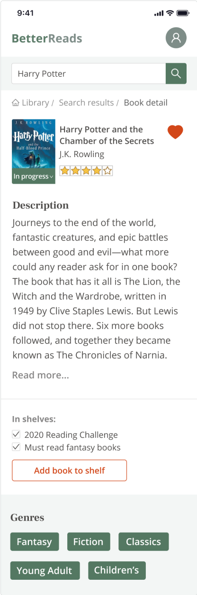
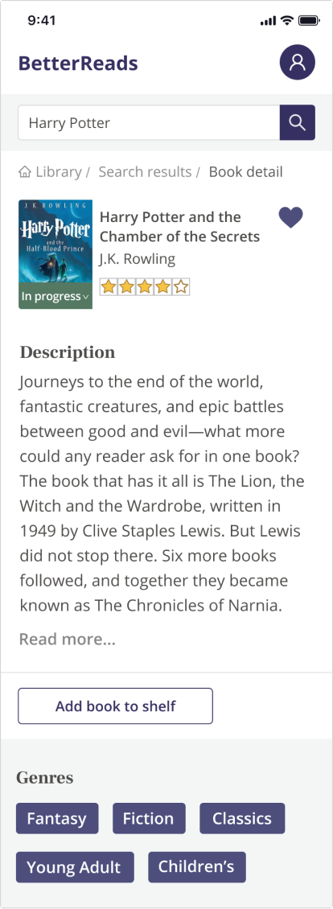

NextBook
Area of focus
Understanding the previous team’s goals
Exploring high value additions to the existing service
Developing a design system that future teams can use effectively
Additional details
4 week timeline to deliver 2 key features
Provided with minimal resources from previous team
Team included 1 designer, 2 web developers, and 3 data science partners
Discovery: Using research to find the highest value features
My first step was to take a deep dive into the research the previous team had compiled. I learned that our potential user base had 2 categories: book lovers who are always searching for new books they will love and people who wish they read more books.
Key insights from user interviews
Book readers want to organize their books in meaningful ways.
80% of the potential users use book tracking services to organize their books for the sole purpose of finding new books to read.
People want motivation to reach their book reading goals.
All of the potential users I spoke to wished they could read more books, and indicated they would want to challenge themselves to reach book reading goals.
From the previous design to the new
I noticed in the original design that the primary color made the product feel busy as well as outdated. As I researched our competition and similar interfaces, I realized that visually we were dealing with a plethora of mismatched colors and styles in the book cover illustrations, resulting in an overwhelming look and feel.
I tried applying new colors to the original design, but I soon realized I needed to bleed out nearly all of the color from the UI to compensate for the vibrancy and variation in the book covers.
Iterative process: Important progressive steps for each page
After gathering more user data, we knew that our focus should be on showcasing book recommendations as the solution the the user’s problem. Users want to quickly and easily find their next book, and to accomplish this they want personally curated book recommendations.
I decided that I would work in low fidelity as long as possible to ensure the user would focus on the interactions and not the various illustrations during usability testing.
Book recommendations on the home page
In this iteration, I focused on providing the user a snapshot of their entire account. It was busy and lacked cohesion.
Closing in on the final design - I decided to remove all other elements that did not solve for the user’s primary problem: finding their next book. I was heavily inspired by Netflix here and implemented horizontal scrolling lists.
Key insights from home page usability tests
Users loved the idea of book reading goals on the home page.
Motivation is key to accomplishing goals, and pressure is one of the ways we stay motivated. All users tested that they would like to have their goal progression displayed on the home page.
Users want to know why we are recommending certain books.
Users are asked to give us their preferred genres during onboarding so we can start to build their personal recommendation model. Our model knows why we are recommending a book, but the user wants to know as well.
Private collections and notes in the book details page
In the book details, I originally thought that users would want to write their own private book notes. I learned from the users I spoke to that they found little value in this feature and instead wanted to group books in their own private collections using tags!
I started seeing the final design in this iteration. I wanted to preserve the top right space for personalization and dedicate enough real estate to related book recommendations.
Once I nailed down the personalization and recommendations sections, I realized I had plenty of room to blow up the book cover, which created an incredibly unique visuality to each book details page.
Key insights from book details usability tests
Users want relevant information and literally nothing else.
What I found interesing was the amount of ways people conceived of a book details page. Some wanted more information, but many wanted a more minimalistic design that focused on the single action they wanted to take: adding books to their collections.
Related books and recommended books mean the same thing to users.
I was surprised to learn that people were conflating these two terms. To me, a related book is a book by the same author, in the same series, or takes place in the same fictional universe. A recommendations model may include these factors, and so many more!
How do people want their book collections displayed?
As soon as I started adding in book covers and moving to high fidelity, I realized I had a navigation issue. I broke out what started as the user profile page into 2 parts: a private book collections page and a user profile modal (seen in the final designs below).
Key feedback received from preference testing the collections view
Users thought the stacking of the books created an attention-grabbing feature.
Although many of my peers and advisors thought that the flat card design and the 3d stack design were both acceptable, the 3d effect was the most interesting and added an element of fun to the page.
Final Designs
Home page: where recommendations are the most important
The goal of the home page was to showcase book recommendations. You can see here that our recommendations take up the entire lower half of the page. We also made it eady for the user to choose their next book from their “Up next” collection.
User profile modal: making space for more valuable features

The decision to move the user details to a modal cleared the way for a super clean collections page view.
Collections view: making the view both interesting and practical
I was so pleased to find that multiple users thought this 3D-style stacking visual was intriguing and it didn’t distract from the purpose of the page.
Book details view: enabling users to add books to their private collections
This is the book details page, where users can add the book to any collection. Users felt it was important to be able to use a tag-like system since it is something they recognize easily.
What I learned...
I was grateful for the opportunity to design solely for desktop, something I hadn’t really done in my previous projects.
How to break my tendency to design myself into a box I can’t get out of.
I was excited to once again design something by myself, it was my impression that the more people you add into the mix, the longer things can take. I couldn’t have been more wrong. I found myself going too deep into details too early, I felt unsure how to move forward several times, and my ability to be creative took a nosedive. I realized how important it is to be constantly collaborating with not only your developers, but with other designers.
Don’t get spooked by a due date
I was still wireframing in week 3 and the project was due in completion at the end of week 4. Although I did have a solid reason behind the decision to remain in low fidelity that long - I was looking at other projects done in the same time frame and started doubting my decisions, process, and progress. I had to remind myself that pacing is important and everything is a learning experience. I will say that I had to pull it together quickly near the end, but everything turned out great!